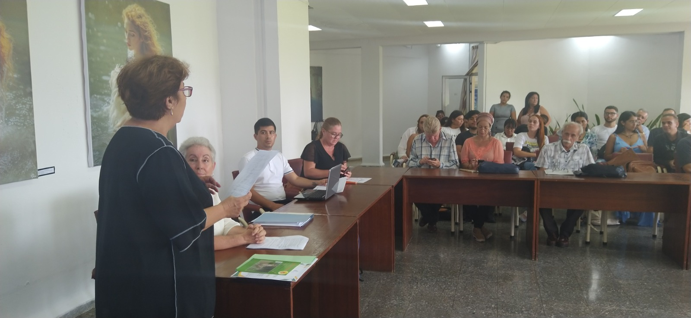

Volver
Volver
Celebran aniversario de la Cátedra de lectura y escritura de la Universidad de Matanzas

Celebración del aniversario 30
La Cátedra de lectura y escritura de la Universidad de Matanzas, reconocida por la Organización de las Naciones Unidas para la Educación, la Ciencia y la Cultura, en conmemoración del aniversario 30, desarrolla un conjunto de actividades.
Actividades principales
Como parte del programa efectuaron una sesión solemne y el coloquio Leer y escribir, que involucra a diferentes especialidades de la casa de altos estudios yumurina. La jornada de celebraciones, por su fundación el 6 de julio de 1994, abarca además una sesión científica virtual y plantarán árboles frutales en el Jardín Botánico de la Universidad.
Participación internacional
Los encuentros tuvieron la participación de una representación de Universidad Michoacana de San Nicolás de Hidalgo en México, académicos e investigadores de diferentes centros de estudios.
Declaraciones de la presidenta
La Dra.C. Bárbara Mariceli Fierro Chong, Presidenta y fundadora de la Cátedra recalcó la importancia de la institución cultural y se refirió a los desafíos de la lectura y la escritura ante las nuevas tecnologías de la información y la comunicación.
Un legado en defensa de la lengua maternal
La Cátedra de lectura y escritura de la Universidad de Matanzas cumple tres décadas a la defensa del estudio de la lengua maternal y en la reafirmación de la lectura y la escritura como herramienta de cambio social.
Autor principal: Lisania La Osa Llanes